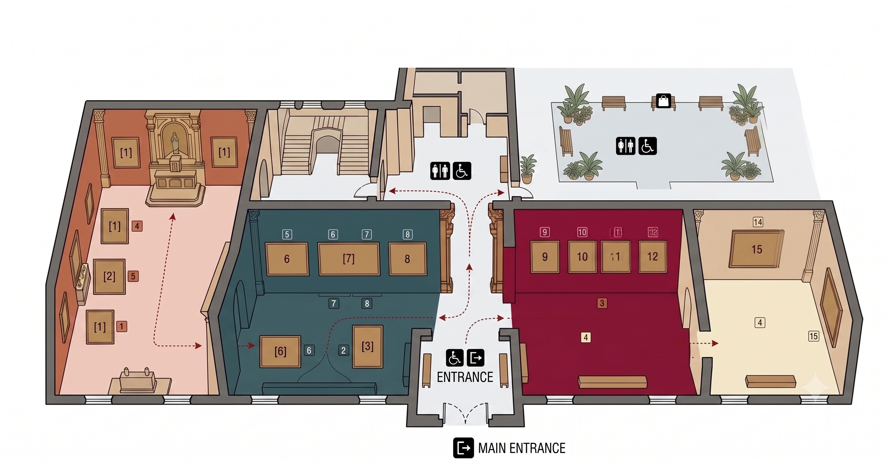

ABOUT
SOBRE LA EXPOSICIÓN
Esta exposición virtual complementa la muestra física y busca desdibujar la idea simplista de que todos los afrodescendientes en la época colonial eran esclavos.
A través de obras seculares, religiosas y retratos, descubriremos cómo los afrodescendientes ocupaban roles diversos y complejos en la sociedad colonial: comerciantes, artesanos, líderes religiosos y figuras de confianza en las élites.
PLANIMETRÍA

Pasa el cursor sobre los números para ver las obras • Haz click para más información
EQUIPO CURATORIAL
Dra. María Fernández
Curadora Principal
Arte Colonial Latinoamericano
Dr. Carlos Mendoza
Investigador Senior
Historia Social Colonial
Lic. Ana Torres
Coordinadora de Educación
Mediación Cultural